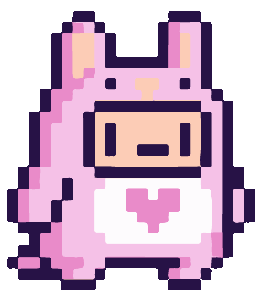
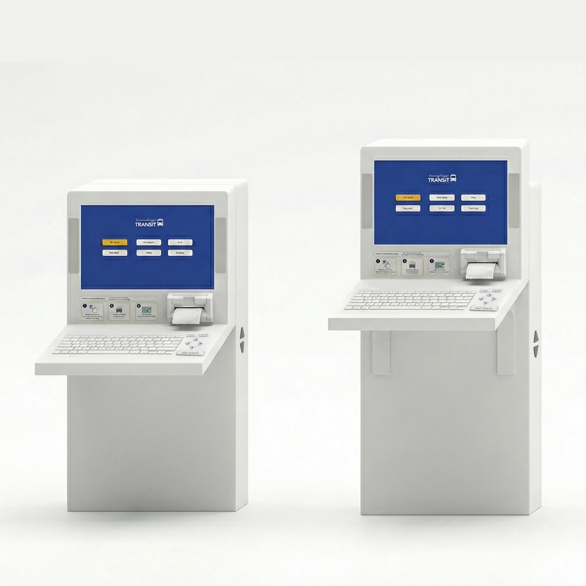
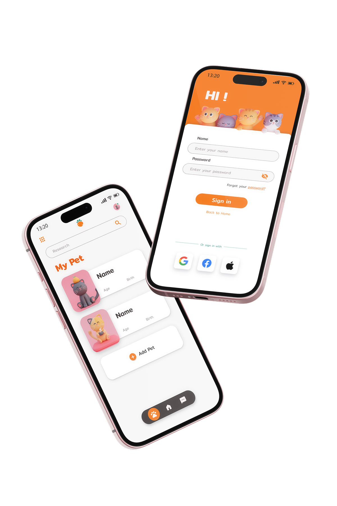
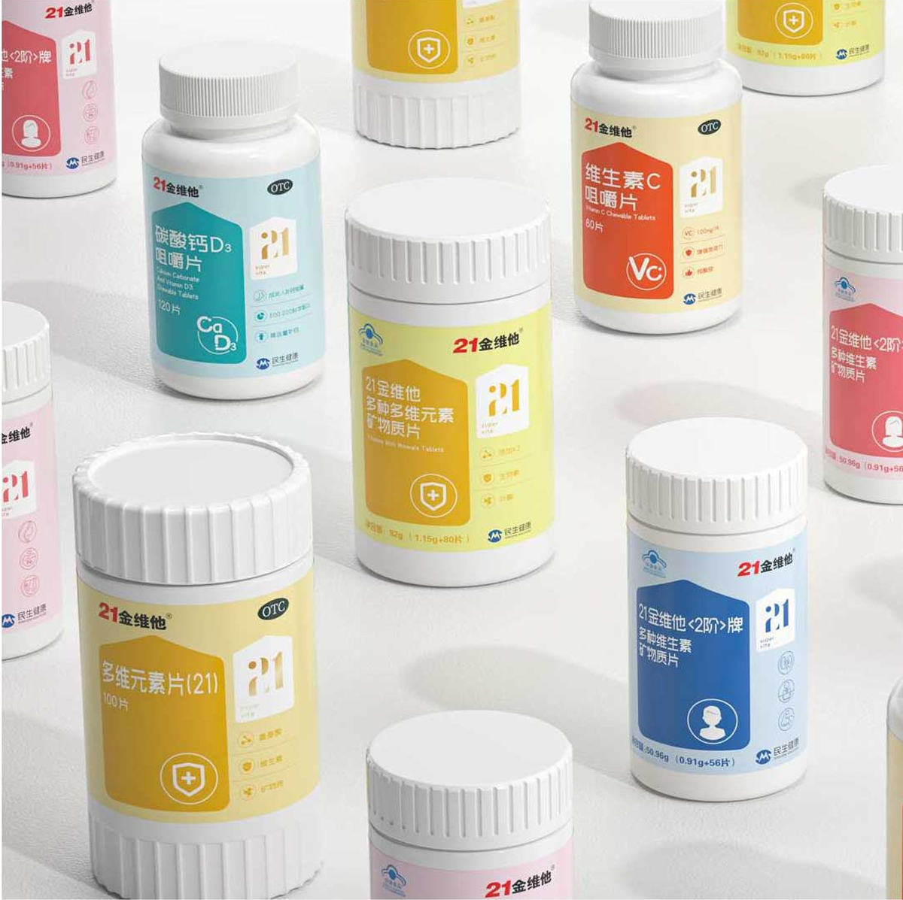

Carol Chen
UX Design 01Bridging the Digital Divide in Public Transit.
A Study on the Availability of Uber Eats.

UX Design 03A companion app designed for parrot owners

Graphic Design 04End-to-end packaging experience redesign